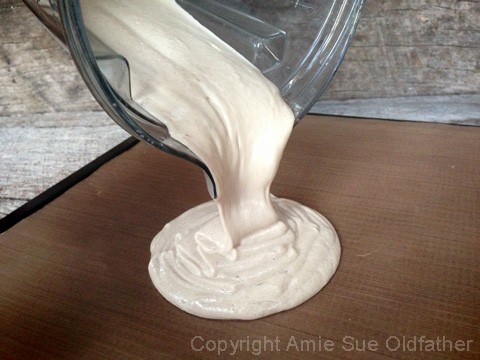
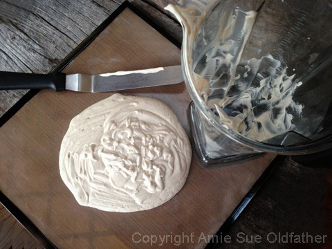
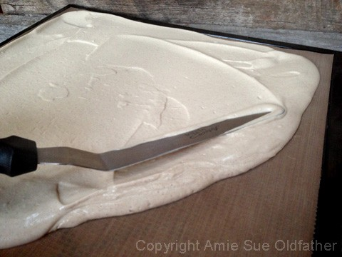
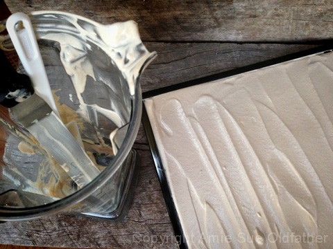
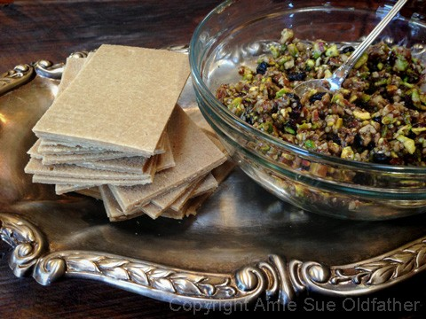

Middle Eastern Nut-Filled Baklava with Honey Sweet Cream

~ raw, vegan, gluten-free ~
Baked Baklava is a rich, sweet dessert made of layers of phyllo pastry filled with chopped nuts and sweetened with syrup or honey. Amie Sue’s Raw Middle Eastern Nut-Filled Baklava with Honey Sweet Cream is a rich, RAW sweet pastry made of layers of cinnamon “phyllo” dough filled with pistachios, pecans, clove, and cardamom! And let’s not forget the honey sweet cream!
We all have our versions and variations, and I have to say that as of today’s date, this is my all time favorite dessert! Bob is an all-time lover of baklava, and I have to admit that I was very nervous for him to try it. Presenting a raw and healthy version of someone’s favorite comfort food is always a bit unnerving as they have such high expectations.
As he took a bite, I almost couldn’t look at his face… I feared “the wrinkled nose” or the “11’s” that would form between his brows… but instead, he just kept nodding his head as he took bite after bite. He loved it. Shew!
There are three basic components to this recipe; dough, filling, and cream. Each one goes together really quickly, the dough just takes a little prep due to the drying process, but the dehydrator does all the work. :) When creating the dough, keep in mind that the end texture result is for it to be pliable like a fruit leather. I give dry times and temperatures below, but keep an eye on it, so it doesn’t get overly dry.
I found my inspiration through Epicurious.com and Simplyrecipes.com
Ingredients:
Cinnamon “phyllo” dough:
- 1 1/2 cups soaked raw cashews, soaked 2+ hours
- 1/2 cup water
- 2 Tbsp fresh lemon juice
- 2 Tbsp raw honey raw coconut nectar
- 1 Tbsp vanilla extract
- 1/2 tsp ground cinnamon
- 1/4 tsp Himalayan pink salt
Filling:
- 3/4 cup raw pistachios, soaked & dehydrated
- 3/4 cup raw pecans, soaked & dehydrated
- 1/4 tsp Himalayan pink salt
- 1/4 tsp ground clove
- 1/4 tsp ground cardamom
- 3 Tbsp raw honey or raw coconut nectar
- 1/2 Tbsp vanilla extract
- 1/2 Tbsp lemon juice
- 2 Tbsp diced, dried cranberries
Honey sweet cream:
- 1 cup raw cashews, soaked 2+ hours
- 5 Tbsp raw honey or raw coconut nectar
- 3 Tbsp raw coconut butter
- 1 vanilla bean, seeds only
- 1 tsp fresh lemon juice
- 1/8 tsp Himalayan pink salt
- 6 Tbsp water
Preparation:
Dough:
- Soak, drain and rinse the cashews.
- In a high-speed blender (Vitamix or Blendtec) combine the cashews, water, lemon juice, honey, vanilla, cinnamon, and salt. Blend until the sauce is smooth and creamy. Test for grittiness by rubbing a bit between your thumb and finger. If you feel any grit, keep blending. Depending on your machine, this can take 1-5 minutes.
- Pour the batter on the teflex sheet that comes with the dehydrator. I use the Excalibur dehydrator which has a 14″ x 14″ tray. I used one tray, spreading the batter to all edges. Make sure that you don’t spread the batter thinner around the edges. This will prevent the edges from getting brittle from drying quicker than the center.
- Dehydrate at 145 degrees (F) for 1 hour (read why, here), reduce to 115 degrees (F) and dehydrate for an additional 10-15 hours. Check the dough every few hours to make sure that it doesn’t get too dry. The texture should be pliable like fruit leather. While drying, you can make the filling and cream sauce.
- Allow to cool, then score into 2 x 3″ pieces. You can cut them any size that you want, but I found this size to be perfect for a single serving.
Filling:
- In a food processor, fitted with the “S” blade, pulse the pistachios, pecans, salt, clove, and cardamom. Pulse the mix about 5x, leaving the nuts in small chunks. Do not process to a puree. Place in a medium-sized bowl.
- Add the honey, vanilla, lemon juice and dried cranberries. Mix together with your fingers. The mixture is very sticky.
Cream:
- After soaking the cashews, drain and rinse. Place in a high-speed blender.
- Add the honey, coconut butter, vanilla bean seeds, lemon juice, salt, and water. Blend until smooth and creamy. You shouldn’t detect any grittiness. Depending on your blender this can take anywhere from 1-5 minutes. Put in a squeeze bottle and place in the fridge while your dough to drying.
Assembly:
- Create layers alternating dough and filling. Squirt a little cream in between each layer, then drizzle over the completed dessert.
- You can make the dessert 2 or 3 layers high. The more layers, the less individual desserts it will make, so keep that in mind.
- I suggest assembling the desert shortly before eating it so that the dough doesn’t get soggy. So, store the components separately until ready to eat. They ought to keep for up to 5 days just fine.

After scraping as much of the dough batter as you can out of the blender… add
1 cup of your favorite milk and blend for 20 seconds. Pour into a glass and enjoy!
Go ahead; you deserve it! Not only that, but it helped clean out your blender.
You can thank me later. :)

Spread the batter all the way to edges of the dehydrator tray. Don’t worry if it slops
over onto the rim of the tray. The main thing is to spread the batter evenly. Don’t
have a thick center and thin edges. If you do, the dough won’t dry evenly, and the edges
will be brittle.

If you got some of the batter on the edge of the tray, slide your finger or damp cloth
tip down the edges to clean them up. Place in the dehydrator and continue to
follow the instructions that I wrote out above.

Let the layering begin! Try not to eat all the filling while you make these… :)

© AmieSue.com